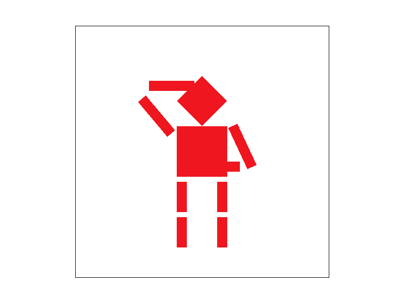
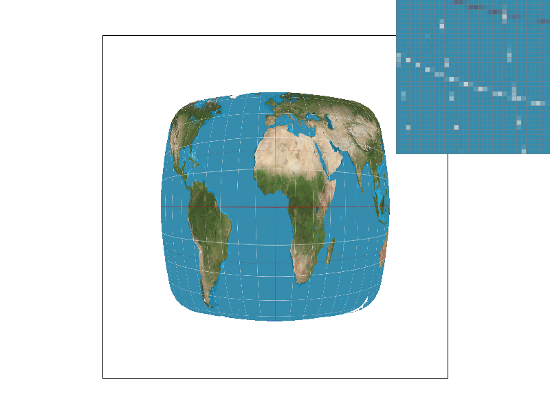
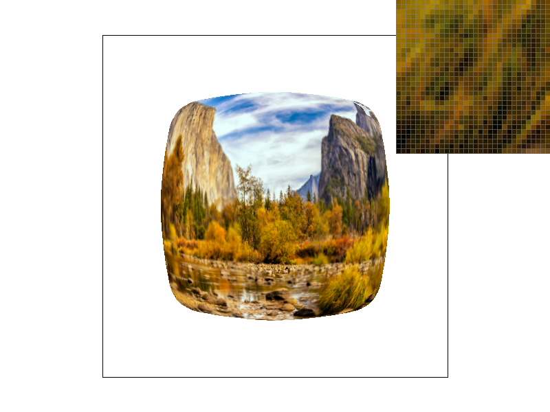

Author: Stephen Lee
Date: February 2025
In this project we begin by building up a rasterization pipeline. From there, we branch out to implement a wide variety of features to make this more rich such as transforms and texture mapping. We further implement features to combat aliasing effects in these scenes such as supersampling, pixel sampling, and level sampling which we will go into detail later.
My implementations starts by checking the winding order of the triangle that is passed in, because the rest of the implementation assumes that the triangle is oriented with points labeled in CCW order. I do this by checking the sign of the cross product of 2 edges of the triangle and swapping points to ensure that the sign is always positive.
I then compute the bounding box of the triangle that we are rasterizing. I accomplish this by finding the minimum and maximum X and Y values between all the input points. The minimum computes the integer floor of the minimum X and Y values, and the maximum computes the integer ceiling of the X and Y values. This should be the smallest possible bounding box that ensures that the entire triangle is within it, because we are sampling at the center of each pixel. By doing the floor for the minimum we can clearly see that this would include the center of the pixel since we are indexing from the top-left corner of each pixel. We need to do the ceiling of the maximum value, because when we cast the float to an int to iterate over pixel indices, we could possibly be excluding pixels where its center lies in the triangle.
Now that a minimum sized bounding box has be created, I simply iterate over this bounding box and determine whether the center of each pixel contained with the box is within the triangle or not. Following the lecture slides, I compute L(x, y) for each of the edges at each pixel and since the winding is CCW, we check that this value is not negative (includes 0 to include samples that are on the boundary of the triangle as requested). If this condition holds we call \verb|fill_pixel| with whatever color we are passed in.
Let's begin by discussing the data structures that I modified to properly implement my supersampling algorithm. The modification to the existing code was quite simple, I just multiplied the size of the \verb|sample_buffer| by the \verb|this->sample_rate| in the \verb|set_sample_rate| and \verb|set_framebuffer_target| functions. We are going to need this much more memory to store our samples since we are now taking \verb|this->sample_rate| samples per pixel, where we were just taking 1 sample per pixel before. This sample buffer is just a 1D vector of values, so to stick with the convention already in place, samples for each pixel are also stored in row-major order. This means that the first \verb|this->sample_rate| values in the \verb|sample_buffer| correspond to the first pixel, where the first \verb|sqrt(this->sample_rate)| values correspond to the first row of samples for that pixel, and the next \verb|sqrt(this->sample_rate)| values correspond to the second row of samples for that pixel, so on and so forth for each pixel. The storing conventions for the pixels themselves remains the same as the starter code, but now that we are storing \verb|this->sample_rate| values per pixel, each pixel can be indexed by using the prior indexing scheme from the starter code and multiplying by \verb|this->sample_rate|
Now for the algorithm itself, we really only need to make major changes to \verb|rasterize_triangle| and some minor changes to \verb|fill_pixel| and \verb|resolve_to_framebuffer|. Starting with \verb|rasterize_triangle|, we conceptually need to subdivide each pixel into a grid such that the number of cells in that grid is \verb|this->sample_rate|. We accomplish this by adding 2 more nested for loops per pixel that iterate over this grid to sample at the centers of each of these grid points. Other than that, we can follow the same computation logic from Task 1 to determine if this sample lies within the triangle, and then save the color to the appropriate location based off the data structure described previously if the point truly is inside or on the edge triangle. For \verb|fill_pixel| we just need to make a minor change that loops over all the indices that correspond to the pixel and sets them to the given color. Finally for \verb|resolve_to_framebuffer| we similarly add a loop that iterates over all the indices that corresponds to a pixel, and we equally weight and sum the color values of those supersamples to get the overall color that should be passed to the \verb|framebuffer|.
Supersampling is useful because it allows us to remove visual artifacts like jaggies that appear in our scenes due to our sampling rate being too low to capture the details in the true geometry of the scene. The algorithm for supersampling described above antialiases my triangles by sampling at a higher rate that may capture some of the higher frequency variation in the geometry, and then downsampling to the actual display dimensions. Below, different levels of supersampling are shown:
In this task, I performed transformations to manipulate objects in the scene. Below is an image of my "cube man" making a salute:
In simplest terms, barycentric coordinates describe a position relative to the 3 vertices of a triangle. In the case above from the slides, these are $V_A, V_B, V_C$. The quantities that describe this position are $\alpha, \beta, \gamma$, which are the closest signed distances of the point, in this case $V$, from the edge opposite the vertex in question. For example the value of $\alpha$ is the closest distance from the point $V$ to the edge formed by $V_c$ and $V_B$, which we'll call $BC$. The sign of this distance refers to which side of the edge, in this case $BC$, the point lies on. The value is positive when the point lies within the triangle and negative when the point lies outside of the triangle.
Below is a test case using barycentric coordinates:
In this task we implemented pixel sampling. Pixel sampling is the process determining what color we should shade a particular pixel by extracting color information from a texture. We can determine this color information by mapping locations in the texture to locations in the scene that we are rendering, but these mappings don't always perfectly align with the pixel grid of the texture. There are a couple of ways that we approached this issue here: nearest sampling and bilinear sampling. Nearest sampling is the simpler of the 2 methods an just determines which texel is closest to the location that we have mapped to in the texture. Bilinear sampling on the other hand takes into account the 4 nearest texels to the point that we have mapped to, and linearly interpolates between those 4 colors.
This texture mapping was implemented by modifying the existing triangle rasterization code that we developed in the previous sections. We now are passed in $uv$ coordinates for each vertex of the triangle as well as their $xy$ coordinates. We compute the barycentric coordinates of points that we are trying to sample and use them to properly weight and compute the $uv$ coordinates of the sample point based on the $uv$ coordinates of the vertices. Using the highest resolution texture, we can scale these $uv$ coordinates by the dimensions of the texture and perform nearest sampling by rounding this value to the nearest integer or bilinear sampling by finding the 4 nearest texels and doing bilinear interpolation between those 4 color values.
|
|
|
|

|
|
In the figure shown above, we can clearly see that bilinear sampling produces a superior output quality than nearest sampling. Looking at the two images where we only take 1 sample per pixel, we can see that the lines of latitude and longitude on the map are way less spotty and aliased with bilinear sampling than nearest sampling. This makes sense since bilinear sampling takes into account more of the local area of the texture that it samples, we would expect fine details like this to come out smoother and less spotty than nearest sampling which only takes into account one texel that would need to be precisely sampled. In general, we should see bigger differences between nearest sampling and bilinear sampling when we are dealing with small features that have high contrast with their surrounding environment like the white longitude and latitude lines on the maps. We can see that when we take 16 samples per pixel, this difference isn't particularly noticeable anymore, which makes sense since we can take into account more high frequency variation in the image.
In this next section we improved upon the texture mapping we implemented in the previous task by implementing level sampling. Level sampling is a technique used in texture mapping to select an appropriate level of detail of textures to use for areas of our scene depending on factors like the rate of change in texture coordinates. Depending on the level that we compute, we may want to sample a lower resolution version of our texture, which can potentially reduce some aliasing effects.
We implemented level sampling for texture mapping by working off of the code developed for the previous task. Rather than just computing the barycentric coordinates of the position we are currently sampling (x, y), we want to compute the barycentric coordinates for points (x + 1, y) and (x, y + 1). This allows us to use these additional values to compute the appropriate level of mipmap we should use for this position. We then have 3 different modes that take these levels into account: level 0 where we simply use the full resolution texture every time, nearest where round the computed level value to the nearest integer level, and linear where we linearly interpolate between the 2 levels that our computed level lies between. For all of these modes we also support all the other features implemented in the previous sections.
From all of these tasks, we have implemented pixel sampling, level sampling, and supersampling. Out of these 3 options, pixel sampling is the fastest and has the lowest memory impact because it only requires doing computation on a few more texels per pixel and works on the original texture resolution so doesn't need any more memory to store this. It has the weakest power to reduce aliasing effects as we can observe in Figure 6 from task 5 where bilinear sampling produces better results but still clearly has aliasing effects with 1 sample per pixel. Level sampling is also pretty fast since we only introduce a few more computations to determine the appropriate levels before sampling when compared to pixel sampling. It does incur a decent memory cost since we are now storing lower resolution copies of the original texture. However, we can some pretty good antialiasing results from this as we can see in Figure 7 below. Finally, with supersampling we incur a high speed and memory cost, because we are introducing a multiplicative number of samples to each pixel which we need to be compute and store. This method does have the greatest power to antialias our scenes as demonstrated in Figure 6.
|
|
|
|
|

|
In Figure 7, we can see continual decreases in aliasing as we add on more of the antialiasing methods we implemented. Nearest sampling at level 0 has some pretty bad aliasing artifacts, and introducing bilinear sampling at level 0 helped to address this a little bit. The nearest level sampling images at the bottom seem to have much more effective at antialiasing as we have pretty smoothed out textures there.